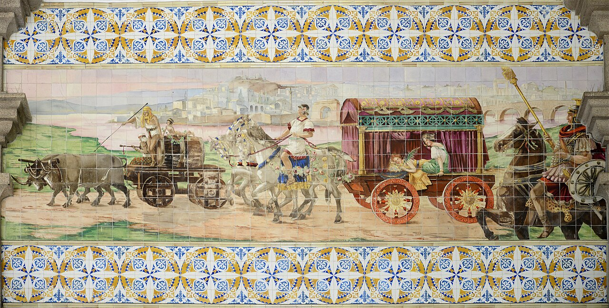
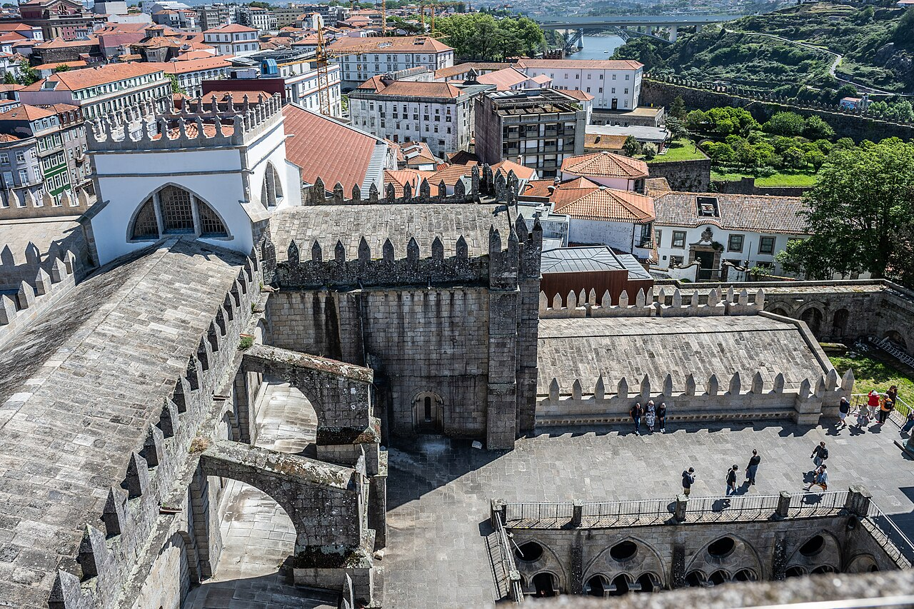
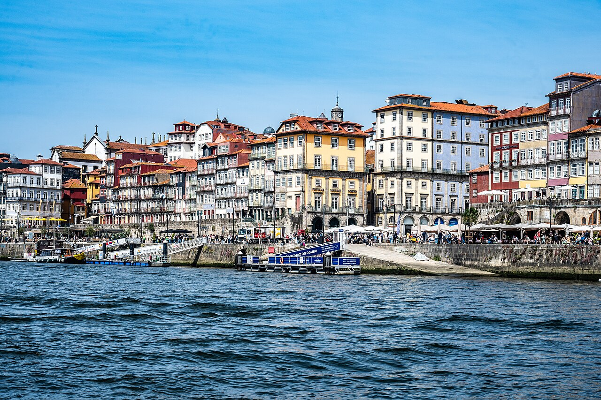

הסיפורים של פורטו
היסטוריה, תרבות ואנקדוטות מקומיות שמחברות את הנקודות.
הכירו את העיר דרך הסיפורים, התצפיות, הרחובות היפים והטעמים המקומיים — בקצב נעים ועם המלצות שבאמת יעזרו לכם בהמשך הטיול.
הסיור עושה סדר בעיר, מחבר בין ההיסטוריה לחיים של היום ומשאיר אתכם עם רעיונות טובים להמשך.
היסטוריה, תרבות ואנקדוטות מקומיות שמחברות את הנקודות.
סאו בנטו, אזור הקתדרלה, הריביירה ונקודות תצפית אהובות.
איפה לאכול, מה לשתות, מה שווה לראות ועל מה אפשר לוותר.
אנחנו רוצים שתבינו למה פורטו נראית ומרגישה כפי שהיא: עיר של סוחרים ומלחים, קהילה עקשנית, יין מפורסם, אריחים כחולים ושכונות שיורדות אל הדורו.
מתחילים בהיכרות קצרה ובונים תמונה ברורה של העיר והיום שלפנינו.
אתרים מוכרים, פינות נסתרות וסיפורים שמחברים עבר, הווה וחיי יום־יום.
מקבלים תשובות והמלצות שמתאימות לטעם, לקצב ולזמן שנותר לכם בעיר.
המסלול המדויק יכול להשתנות, אבל הלב של פורטו תמיד נמצא בדרך.

תחנה שהיא ספר היסטוריה מצויר באריחים.

סמטאות, חומות ותצפיות אל הגגות.

המקום שבו העיר פוגשת את הנהר.
המסלול מתקיים במרכז פורטו ומתאים לזוגות, משפחות, חברים ומטיילים עצמאיים.
״פתיחה מושלמת לחופשה. קיבלנו סיפור, הומור והמון טיפים שבאמת השתמשנו בהם אחר כך.״
״הקצב היה מעולה גם להורים, וההסברים בעברית הפכו את העיר להרבה יותר מעניינת.״
״הרגשנו שמטיילים עם חבר מקומי. ההמלצות למסעדות וליום הבא היו בול בשבילנו.״
כן. ההדרכה, הסיפורים והשאלות במהלך הסיור מתקיימים בעברית.
זהו סיור עירוני של כשעתיים עד שעתיים וחצי, עם עצירות רבות להסברים ולתצפיות. פורטו הררית ולכן מומלץ להגיע עם נעליים נוחות.
כן. משפחות מוזמנות, ואנחנו שומרים על אווירה קלילה וקצב נעים. ספרו לנו מראש אם יש צורך מיוחד.
בגשם קל בדרך כלל מטיילים כרגיל. כל שינוי משמעותי נשלח בוואטסאפ.
לאחר בדיקת הזמינות והאישור נשלח בוואטסאפ את השעה, המיקום וכל מה שצריך לדעת.
שלחו בקשת זמינות ונחזור אליכם בוואטסאפ עם כל הפרטים.